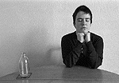

|
Jeremy does the milk trick xxxxxxxxxxxxxxxxxxxxx  Technical notes as narrated by the lovely (if a little anal) Matt Brooker "The camera is on a tripod so that the two shots would match, and the pose (head resting on hands, eyes closed) is easy for the model [that's me!] to hold absolutely still. The first shot (opaque model with empty bottle), was exposed according to a hand-held meter reading (f5.6 at 1/2 sec), because the expanse of white wall would tend to fool the camera's own meter into under-exposing
The second photo (transparent model with full milk bottle) is a double exposure, with the empty milk bottle replaced with a full one (the bottles were put on a table mat so they'd line up perfectly). The first shot was set to under-expose by one stop (f5.6 at 1/4 sec), so that the the film only received half its correct exposure. The model then carefully got out of the way for a second shot, also under-exposed by one stop. The images were scanned directly from the negatives and saved as GIF files to allow for animation."
Camera: 35mm SLR with multiple exposure facility, mounted on tripod |